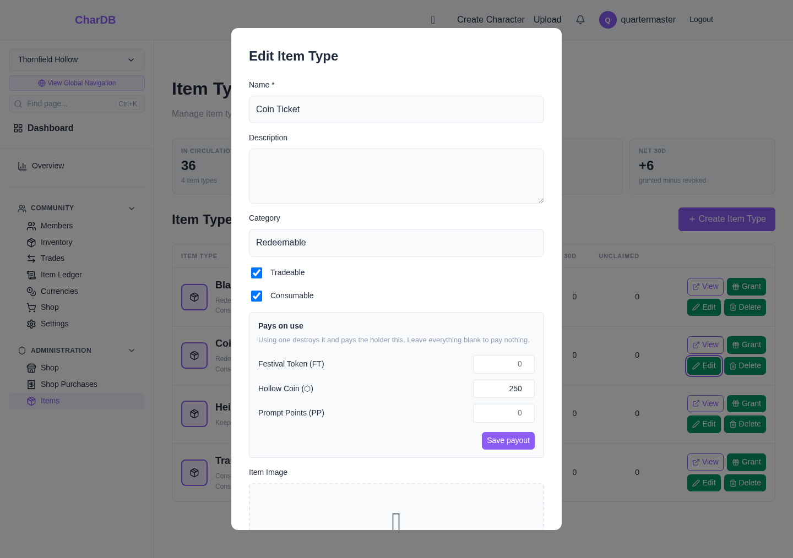
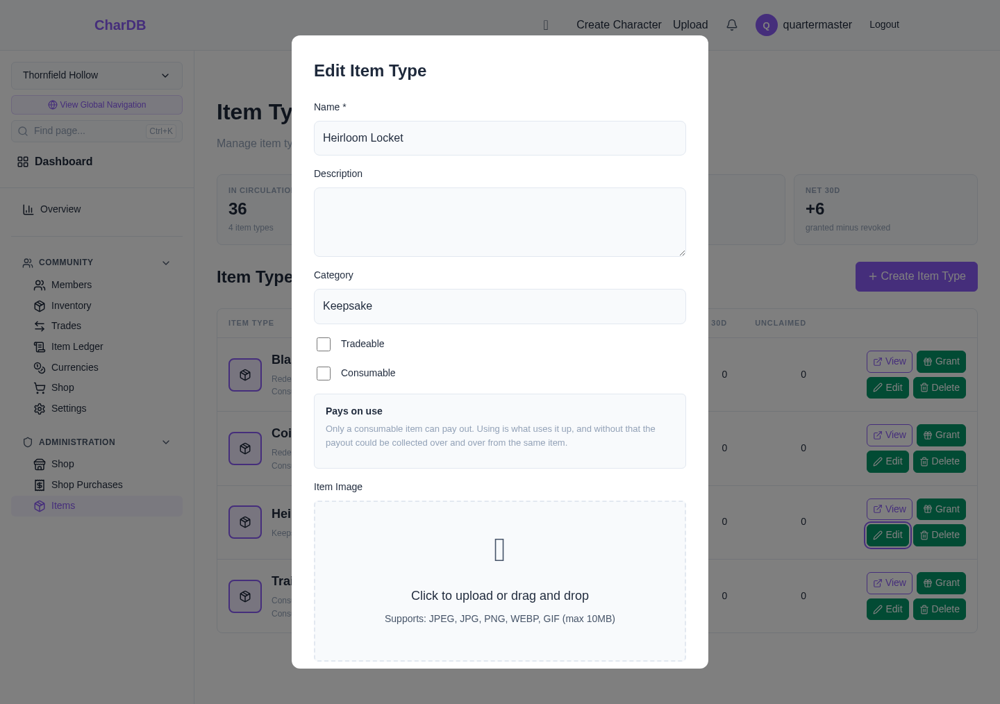
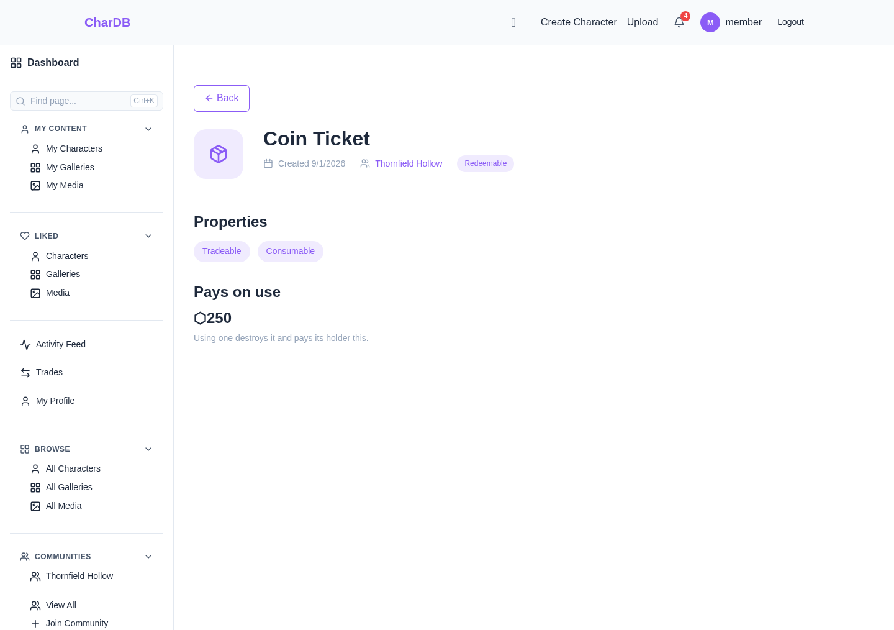
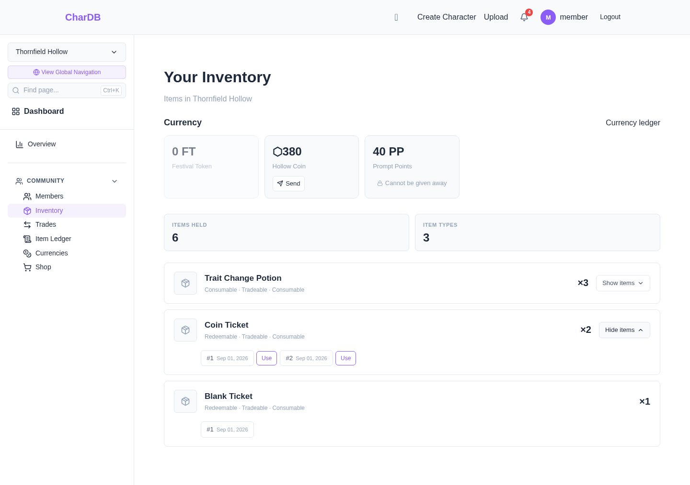
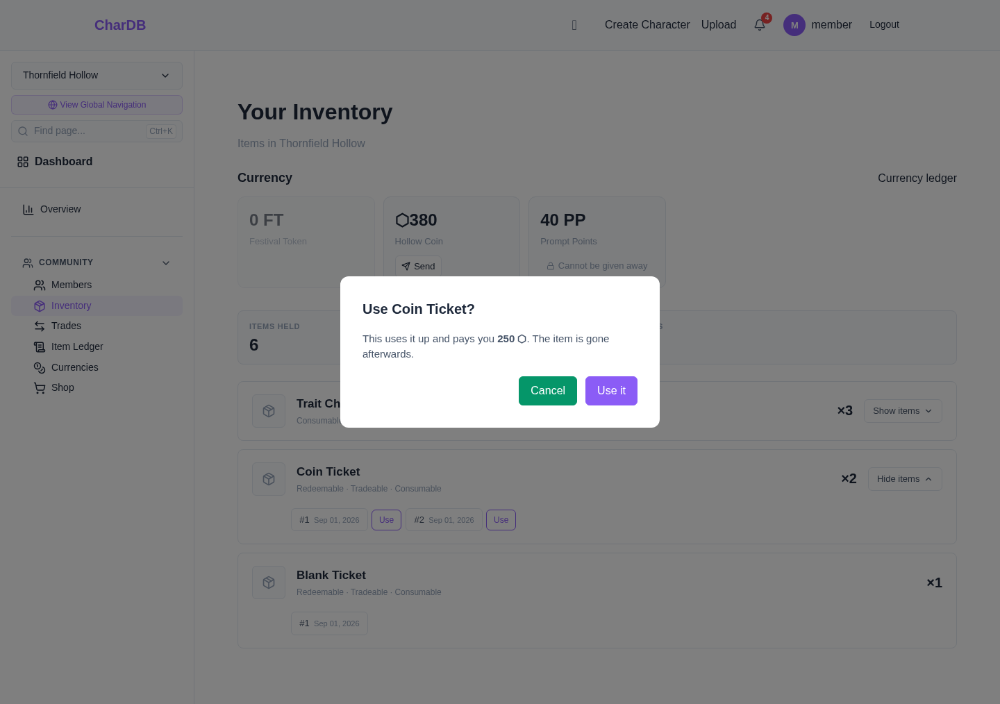
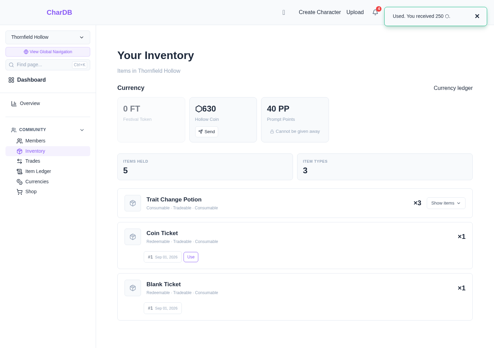
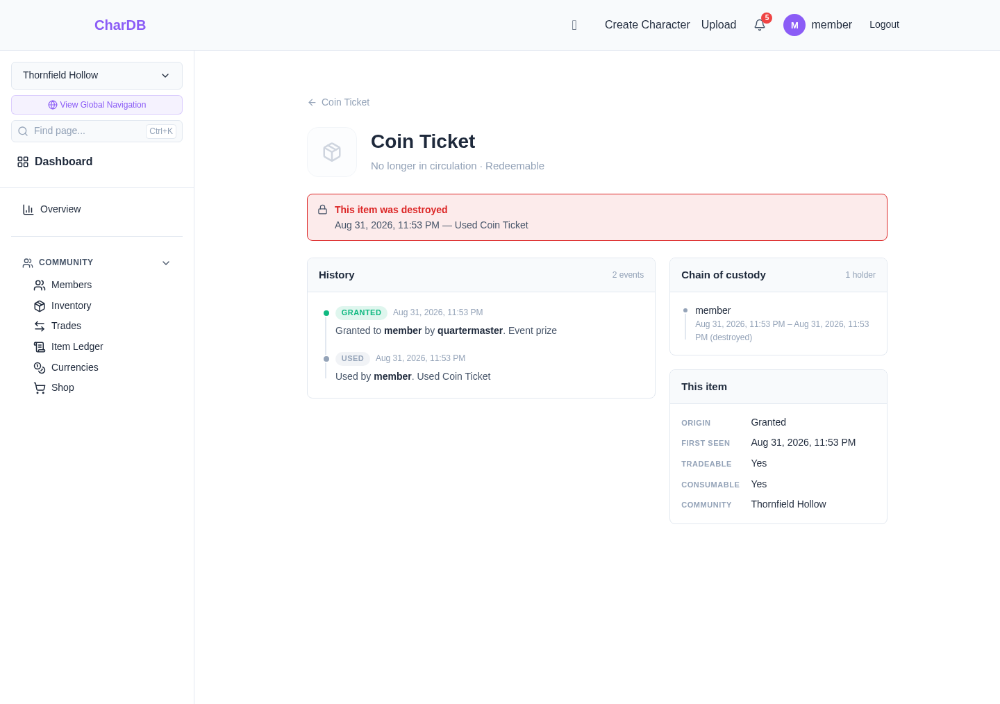

Redeeming Items
Spending an item for what it is worth, and where that shows up afterwards
Overview
An item can be worth something. A community decides that a Coin Ticket is worth 250 coin, hands tickets out as event prizes, and members redeem them whenever they like — the community never has to be in the room when it happens.
Using is the holder spending an item themselves. It is the counterpart to a staff revoke: both take an item out of circulation, but one is done to you and the other is done by you.
Staff decide
What a type is worth, once, per currency
Holders spend
One press, from their own inventory
Both ledgers record it
The item gone, the coin arrived, one event
An item type does one thing when used, and there is more than one thing it can do. The rest of this page is about paying out currency, which is the kind you press and collect. The other kind has a page of its own:
- MYO slots — spend the item to make a character. It opens the create page rather than a confirm, because designing a character needs more than a yes.
- Edit kits — spend the item to change an existing character's traits. The change is a proposal: it goes to staff, and the character does not move until they approve it.
- Variant change items — spend the item to move a character from one variant to another. Unlike the other two there is no review: the change happens the moment it is redeemed, and there is no undo.
A type carries exactly one of these, never more than one. Everything below — consumable-only, the ledger rows, the item page outliving its own destruction — is true of every usable item whichever kind it is.
Staff: setting what a type pays
On an item type's edit form, under Administration → Items, there is a Pays on use panel listing every currency the community has. Put an amount beside one or more of them and save.
It saves on its own, separately from the rest of the form. A payout belongs to a type that already exists, which is also why the panel appears when editing a type and not when creating one.

Only a consumable type can pay. The panel says so rather than letting the amount be typed and refused at save — the reason is the mechanism above, and it is more use where the decision is being made than in an error afterwards.

Setting a payout needs the same permission as editing the item
type, canManageItems. It is worth being deliberate
about who holds it: a payout creates currency, and every use of it
is recorded, but the recording is after the fact.
Seeing what an item is worth
The item type's own page carries the payout, so anyone can see what one is worth without holding it — which matters before a trade as much as before a redemption.

Using one
A Use button sits beside each copy in your inventory, under Community → Inventory. Items are tracked individually rather than as a count, so you are always spending a particular one.

Using cannot be undone, so it asks — and it says what you are getting before you commit, not after.

Both halves land together. The item leaves the inventory and the balance rises in the same moment — no reload, and no window where one has happened and the other has not.

Afterwards: the item ledger
The community's item ledger, under Community → Item Ledger, gets a Redeemed entry. It reads member → consumed, which is what distinguishes it at a glance from a revoke, where an item goes back to staff.

Afterwards: the currency ledger
The community's currency ledger, under Community → Currencies, records the payment, and links back to the item that produced it.

Afterwards: the item's own history
A used item's page keeps working. That is deliberate and it is the same promise revoked items get: the item is gone from circulation, but what happened to it stays readable.

When a use is refused
Everything checked when the payout was configured is checked again when somebody presses Use, because none of it stays true on its own. A use is refused, with the item untouched, when:
| Situation | Why |
|---|---|
| The type is not consumable | Using would not use it up, so the payout could be collected over and over from the same item. |
| The type pays nothing | Destroying an item and handing back nothing is worth refusing rather than doing quietly. |
| The payout currency has been archived | It cannot be created any more. The item is left alone rather than spent for coin that never arrives. |
| You have left the community | Currency exists inside one community, and a balance needs a membership to sit in. |
| The item is not yours, or is already gone | Checked at the moment of the write, not before it, so a trade landing in between cannot be raced. |
In every case the item survives. There is no path where something is destroyed and the payment does not happen.